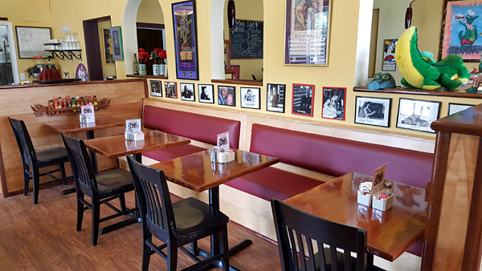

About Us
Bon Temps Cafe has been the home of Southern hospitality and fine Cajun cuisine on the Central Coast since 1995. Come join us across from the railroad station in San Luis-iana!
Owner Phil Lang invites you to treat your taste buds to a truly unique experience.
The atmosphere at Bon Temps is casual and comfortable, tempting you to return time and again.
When the weather's nice, there's no better place to enjoy a great meal and a glass of wine than on the patio.
Try the Fat Tuesday Omelet for breakfast, or a ca`tfish po-boy for lunch, but don’t miss the Crawfish Etouffee, Shrimp and Andouille Jambalaya, or the house specialty, Genuine Seafood Gumbo. You’ll find it hard to decide on one thing. Maybe that's why we have so many regulars.
The wonderful aromas of true southern cooking will make you believe you’re in New Orleans. If Phil (not pictured at left) is there (and in a good mood), he might even share one of his cooking secrets. If not, ask one of the waitresses (also not pictured at left). They’re always nice. So is his wife Julie, holding a pie at right.
When you are looking for something out of the ordinary to eat without having to make the trip to the “Big Easy”, join us at the Bon Temps and... Laissez Bon Temps Rouler! Let The Good Times Roll!